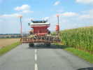
Rely et Linghem sont 2 villages voisins l'un de l'autre, vers Saint-Omer, et les éoliennes que l'on va inaugurer jalonnent la frontière des deux communes ! Comme d'habitude, je prends de petites routes, mais le trafic y est quelquefois bien ralenti...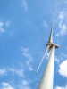
Je trouve assez facilement les éoliennes, malgré un plan fantaisiste, ça se voit de loin... Un bon chemin, bien goudronné, mène au pied. Forcément bon, car on a dû enterrer les lignes à haute tension dessous !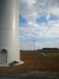
L'éolienne à inaugurer fait partie d'un groupe de 4, bien alignées le long de la route de desserte... Elles tournent déjà, même si l'inauguration officielle n'a pas encore eu lieu ! A l'intérieur, un ascenseur permet la visite et la maintenance.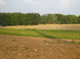
L'éolienne étend, sur les prairies avoisinantes, son ombre impressionnante quand les pales tournent et que leurs 3 ombres balaient tout le champ !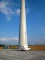
Pour l'heure, ce n'est que le vendredi et je suis tout seul. Je fais quand même voler le Spiralier-Goéland qui s'amuse à décorer le mât de son ombre !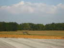
A propos d'ombre, celle de l'éolienne s'étend de plus en plus, la journée avance !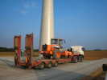
Bon, le rouleau compresseur a fini de damer le revêtement et repart sur son camion spécial... Il était temps de terminer !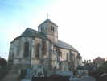
Hé bien, c'est vendredi soir, je ne me coucherai pas trop tard, je rejoins un village voisin, Ligny-Les-Aires, propice à la tranquillité ! Une jolie église accolée à son cimetière...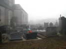
Samedi matin, un brouillard assez compact couvre la région !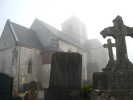
L'ambiance est un peu fantasmagorique sur les tombes, à peine si on peut distinguer le clocher de l'église !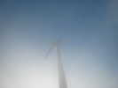
Heureusement, j'y suis allé hier, les éoliennes, je sais où elles sont, même si on ne les voit qu'en arrivant...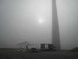
Le brouillard a même tendance à s'épaissir par bouffées, pendant qu'une équipe monte un grand barnum !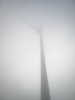
Le soleil a bien du mal à faire lever le voile de brouillard, d'autant qu'il se cache derrière le mât !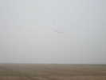
J'ai sorti d'abord Manta, mais le vent est un tout petit peu monté, et le Spiralier reprend du service, même s'il disparaît quelquefois à ma vue !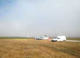
Finalement, le brouillard commence à se déchirer en lambeaux, et les autres cervolistes commencent à arriver, après quelques recherches !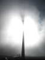
Le soleil derrière l'éolienne joue dans la brume qui persiste et crée des effets très artistiques...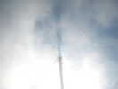
On voit même l'ombre de l'éolienne sur le brouillard lui-même !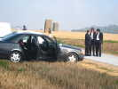
Bon, il commence à arriver du monde que nous ne connaissons pas, comme ces 4 Blues Brothers ! Ce ne sont pas des représentants du constructeur, mais effectivement des musiciens, très bons, d'ailleurs, dans un genre Dixie, qui animeront la fête...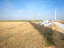
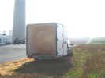
Arrive aussi un aérophotographe, qui utilise un ballon d'hélium qu'il transporte tout gonflé dans une remorque spéciale, ça coûte cher, l'hélium ! Un petit coup de gonflage pour compenser les pertes, et c'est reparti !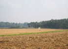
Il se promènera un peu partout pour prendre des photos des éoliennes et de la cérémonie... Son fil étant quasi-vertical, il peut aller assez près de l'éolienne, même à son vent...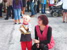
Le vent est encore un peu monté, j'ai sorti Megoel qui volera toute la journée (avec quand même une pause à midi pour déjeuner). Je le promène au milieu des spectateurs et le donne à tenir aux enfants, ça ne tire rien et ça leur fait plaisir...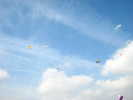
De gauche à droite, le Jessica de Gilles Poutous, Megoel, le Delta Vapeur de Christophe Jacquemoud, un PowerSled de Patrick L'Higuinen qui lève la grosse abeille en bas, le Jimmy Pentagon rose de Michelle, et un delta blanc de Patrick encore !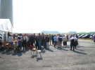
Midi arrive, c'est l'heure de la cérémonie. D'abord, un petit apéritif pour faire patienter en musique, il y aura bien 200 personnes, des représentants de la société, des édiles et des habitants des 2 villages, tous conviés !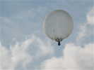
L'aérophotographe a descendu son ballon pour prendre la cérémonie, ça permet de mieux distinguer sa structure, très simple !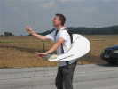
En bas, il a un harnais portant l'écran vidéo, la télécommande, et deux enrouleurs synchrones pour les lignes !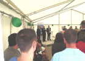
Bien sûr, discours des autorités et des constructeurs qui rappellent l'histoire assez longue face aux opposants et la faiblesse des nuisances, sauf pour la réception TV, mais la société y remédie à ses frais !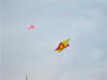
Trois cerfs-volants sur cette photo. Vous ne voyez pas le troisième ? C'est le Delta de Christophe, rouge et jaune aussi, il s'est posé proprement et bien symétriquement sur le dessus du Jessica de Gilles !...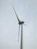
La journée se termine, Gilles a pris de la sécurité et de la hauteur pour shooter l'éolienne de face !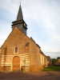
Bon, le samedi se termine, et rien demain, je prends la route doucement. Je roule une bonne heure et je m'arrête à Dromesnil, vers Amiens, pour la nuit. L'église est moins attirante que celle d'hier, avec une grande partie en brique, mais pas laide quand même !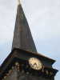
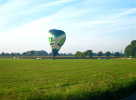
Plus que 2 h de jolies petites routes ! Pas loin, je vois une montgolfière, mais, le temps que j'arrive, j'ai raté l'atterrissage et elle commence à se dégonfler...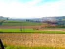